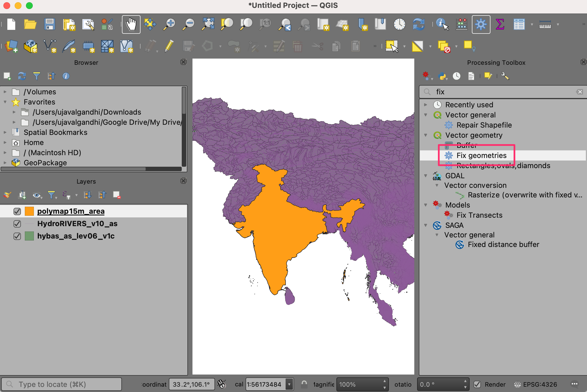
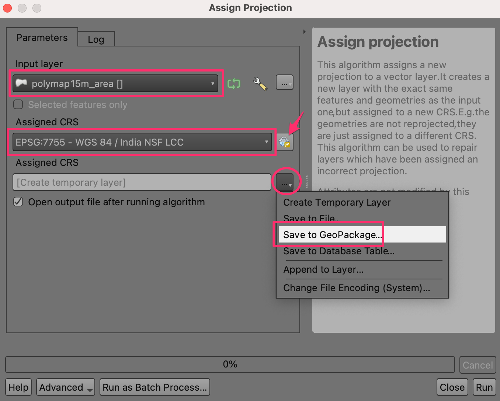
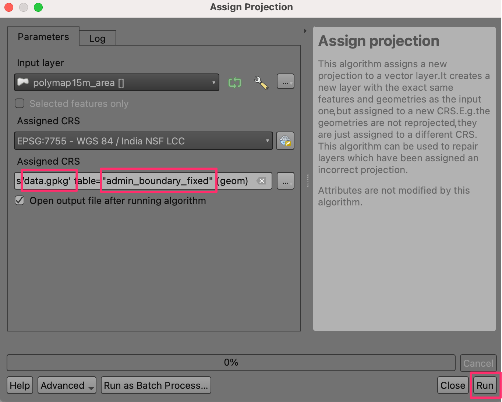

Zoeken en downloaden van gegevens van OpenStreetMap (QGIS3)¶
Het verkrijgen van gegevens met hoge kwaliteit is essentieel voor elke taak in GIS. Een grote bron voor gratis en open gelicenseerde gegevens is OpenStreetMap(OSM) . De database van OSM bestaat uit alle typen kaartgegevens - straten, lokale gegevens, polygonen van gebouwen, administratieve grenzen, etc. Toegang krijgen tot gegevens van OSM in een indeling voor GIS is geïntegreerd in QGIS is mogelijk via de plug-in QuickOSM. Deze handleiding behandelt het proces voor het zoeken, downloaden en het gebruiken van deze plug-in.
Overzicht van de taak¶
We zullen locaties van alle bars en pubs in Londen uit de database van OpenStreetMap uitnemen en opslaan als een vectorlaag.
Andere vaardigheden die u zult leren¶
Hoe meerdere query’s te koppelen in de plug-in QuickOSM.
Procedure¶
Zoek en installeer de plug-in QuickOSM vanaf de QGIS Official Plugin Repository. Bekijk Plug-ins gebruiken voor instructies voor het downloaden van plug-ins. Zorg er voor dat u het keuzevak geselecteerd hebt. Klik op Close.

Eenmaal geïnstalleerd, start de plug-in via .

Op de tab Snelle query kunt u een filter instellen om een subset te selecteren. De attributen van de kaartobjecten in de database van OSM database worden opgeslagen als Tags. Tags worden weergegeven door een sleutel en een waarde. De sleutel is een onderwerp en een waar is een specifieke vorm. Bekijk de wikipagina ` kaartobjecten van OSM <https://wiki.openstreetmap.org/wiki/Map_Features>`_ voor een uitgebreide lijst met tags voor verscheidene typen objecten. Bars worden weergegeven met de tag
amenity:baren pubs met de tagamenity:pub. We zullen eerst de bars uitnemen. Selecteeramenityals de Sleutel uit het keuzemenu.

Selecteer
baruit het keuzemenu Waarde.

We kunnen in de laatste versie (v2.0.0 +) van de plug-in QuickOSM meerdere query’s koppelen. Klik op de knop Plus en vervolgens verschijnt de selectiebalk voor query’s. Klik op het eerste selectievak waar we de opties
AndenOrkunnen krijgen. And zal alleen objecten selecteren die waar is voor alle query’s. Or zal alle objecten selecteren die waar zijn voor elk van de query’s. Klik opOrom zowel de objecten bar als pub te selecteren.

Selecteer
amenityals de Sleutel vanuit het keuzemenu. Selecteer danpubuit het keuzemenu voor Waarde.

Voer
Londonin voor In om de zoekactie te beperken tot de stadsgrenzen.

Vergroot het gedeelte Geavanceerd. In het gegevensmodel van OSM worden objecten weergegeven met nodes, ways and relations. U hoeft alleen
NodeenPointste selecteren omdat we geïnteresseerd zijn in objecten Punt. Klik op Query uitvoeren.

Schakel, als de query eenmaal is voltooid, naar het hoofdvenster van QGIS. U zult een nieuwe laag zien, genaamd
amenity_bar_amenity_pub_London, die is toegevoegd aan het paneel Lagen. Het kaartvenster zal de locaties weergeven van de bars en pubs die werden uitgenomen.

Open de Attributentabel van de laag. Er zijn
2091objecten. De kolom amenity bevat de categorie, of het objectpubofbaris. Laten we onze laag opmaken met behulp van deze kolom met categorieën.

Klik op het pictogram Paneel Laag opmaken openen, selecteer
Categorieënen selecteer in Waardeamenityen klik op Classificeren. Nu zal de laag worden opgemaakt met 2 kleuren objecten, zowelbarsalspubs.

Klik nu met rechts op de laag, kies om de laag als as GeoPackage te exporteren.

Kies, in het dialoogvenster Vectorlaag opslaan als…, als Indeling
GeoPackage, in Bestandsnaam klik op…en blader naar de map waar u de gegevens wilt opslaan en noem de uitvoerlondon.gpkg. Voer, in Laagnaam,bar_and_pubsin. Klik op OK.

Nu zal een nieuwe laag van GeoPackage
london_bar_and_pubsworden toegevoegd aan het kaartvenster.